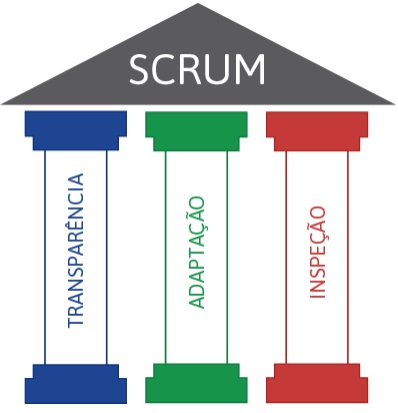
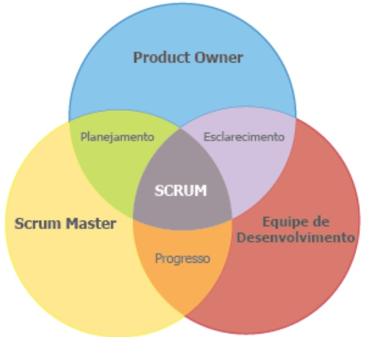
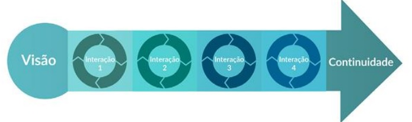
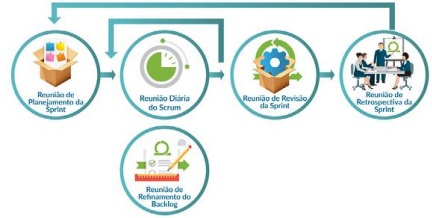
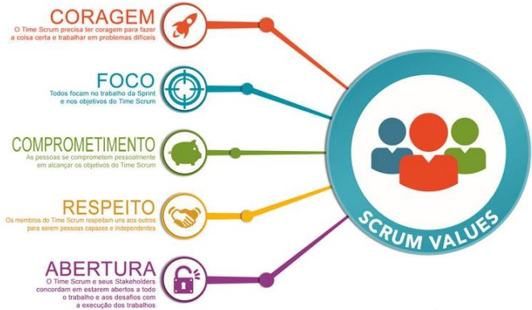
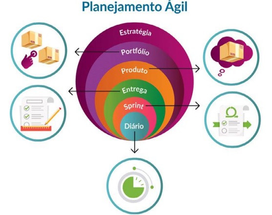

Resumo do SCRUM
O Scrum é uma estrutura que permite abordar problemas adaptativos
complexos, entregando produtos de alto valor de maneira produtiva e
criativa.
Caracterizado por ser leve, simples de entender e difícil de dominar,
o Scrum foi originalmente desenvolvido para gerenciar e desenvolver
produtos desde os anos 90.
Hoje, é utilizado em uma variedade de áreas, incluindo desenvolvimento
de software, hardware, redes, veículos autônomos, educação, governo,
marketing e gerenciamento organizacional.
Sua eficácia reside na transferência iterativa e incremental de
conhecimento. Além disso, o Scrum é amplamente empregado no
gerenciamento de produtos, serviços e matrizes de empresas.
A essência do Scrum
- A essência do Scrum é um pequeno time de pessoas. O time individual
é altamente flexível e adaptável.
- Esses pontos fortes continuam operando seja em uma única equipe, em
várias, ou até mesmo em redes de equipes que desenvolvem, liberam,
operam e sustentam o trabalho e os produtos de trabalho de milhares de
pessoas.
Pilares do Scrum

Transparência: Aspectos significativos do processo devem ser
visíveis para os responsáveis pelo resultado. A Transparência exige
que esses aspectos sejam definidos por um padrão comum, de forma que
os observadores compartilhem um entendimento comum do que está sendo
visto.
Adaptação: Um dos três pilares do controle do processo empírico; O
feedback é usado para fazer um ajuste no produto de trabalho que
está sendo desenvolvido ou no processo pelo qual ele está sendo
desenvolvido.
Inspeção: Os usuários do Scrum frequentemente devem inspecionar os
artefatos do Scrum e progredir em direção a uma meta da Sprint para
detectar variações indesejáveis. Sua inspeção não deve ser tão
frequente de forma que atrapalhe o trabalho. Inspeções são mais
benéficas quando executadas diligentemente por inspetores
qualificados no ponto de trabalho.
Princípios do Scrum
- Papéis (Product Owner, Scrum Master, Scrum Team).
- Eventos (Sprint, Sprint Planning, Daily Scrum, Sprint Review, Sprint Retrospective).
- Artefatos (Product Backlog, Sprint Backlog, Increment).
Papéis

Product Owner: Responsável por maximizar o valor do produto e
do trabalho da equipe de desenvolvimento. Isso inclui gerenciar o
Product Backlog, garantir que os itens mais valiosos sejam entregues
primeiro e fornecer clareza sobre os requisitos do produto.
Scrum Master: Responsável por garantir que a equipe de
desenvolvimento siga os princípios e práticas do Scrum. O Scrum Master
remove impedimentos, facilita reuniões e ajuda a equipe a melhorar
continuamente.
Scrum Team: Consiste em profissionais que desenvolvem o produto
ou serviço. Eles são auto-organizados e multifuncionais, assumindo a
responsabilidade de entregar incrementos de produto concluídos.
Eventos
Sprint: Um período de tempo fixo (geralmente de 2 a 4 semanas)
durante o qual um incremento de produto potencialmente entregável é
criado.
Sprint Planning: Reunião no início de cada Sprint, onde o
Product Owner e a equipe de desenvolvimento colaboram para definir
quais itens do Product Backlog serão trabalhados durante o Sprint.
Daily Scrum: Uma breve reunião diária onde a equipe de
desenvolvimento compartilha o progresso feito desde a última reunião
diária, discute o que fará até a próxima reunião e identifica
quaisquer impedimentos.
Sprint Review: Uma reunião ao final de cada Sprint onde a
equipe de desenvolvimento apresenta o incremento de produto concluído
e recebe feedback do Product Owner e outras partes interessadas.
Sprint Retrospective: Uma reunião ao final de cada Sprint onde
a equipe de desenvolvimento reflete sobre seu desempenho durante o
Sprint e identifica oportunidades de melhoria para os próximos
Sprints.
Artefatos
Product Backlog: Uma lista priorizada de todos os requisitos,
funcionalidades, correções de bugs e melhorias futuras do produto. É
mantido e priorizado pelo Product Owner.
Sprint Backlog: Uma lista de itens do Product Backlog
selecionados para serem trabalhados durante o Sprint. É criado pela
equipe de desenvolvimento durante o Sprint Planning.
Incremento: A soma de todas as histórias de usuário concluídas
durante um Sprint, além de todas as histórias de usuário concluídas em
Sprints anteriores. Deve ser potencialmente entregável e atender à
definição de pronto da equipe.
Interatividade
O Scrum é baseado na teoria empírica de controle de processos, ou
empirismo. O empirismo afirma que o conhecimento vem da experiência e
da tomada de decisões com base no que é conhecido. O Scrum emprega uma
abordagem incremental e iterativa para otimizar a previsibilidade e
controlar o risco.

Reuniões
No Scrum, existem várias reuniões específicas que são realizadas
regularmente ao longo do ciclo de desenvolvimento do produto. Aqui
estão as principais reuniões no Scrum:

É importante que todas as reuniões no Scrum sejam realizadas de forma
eficiente e focada, com o objetivo de promover a transparência, a
colaboração e a entrega contínua de valor ao cliente.
Valores do Scrum

Comprometimento:
Influência no comportamento: Os membros da equipe Scrum estão comprometidos com os objetivos do Sprint e do projeto
como um todo. Eles assumem responsabilidade pessoal pelo sucesso do trabalho.
Exemplo: Durante o Sprint Planning, cada membro da equipe compromete-se com as tarefas que irá realizar durante o Sprint
e está disposto a fazer o que for necessário para completá-las, mesmo que isso signifique colaborar com outros membros da
equipe ou assumir responsabilidades extras.
Coragem:
Influência no comportamento: A coragem permite que os membros da equipe Scrum enfrentem desafios e assumam riscos
calculados para alcançar os objetivos do projeto. Eles estão dispostos a enfrentar problemas difíceis e tomar decisões difíceis
quando necessário.
Exemplo: Durante a Sprint Retrospective, um membro da equipe Scrum expressa coragem ao levantar questões ou
preocupações difíceis sobre o processo de trabalho da equipe, mesmo que isso possa ser desconfortável. Isso permite que a
equipe identifique áreas de melhoria e tome medidas para corrigi-las.
Foco:
Influência no comportamento: O foco permite que os membros da equipe Scrum mantenham a atenção nos objetivos do
Sprint e evitem distrações ou desvios desnecessários. Eles estão comprometidos em entregar valor ao cliente.
Exemplo: Durante o Daily Scrum, os membros da equipe Scrum demonstram foco ao relatar o progresso do trabalho
realizado desde a última reunião diária, discutir os próximos passos e identificar quaisquer impedimentos que possam afetar
o cumprimento dos objetivos do Sprint.
Transparência:
Influência no comportamento: A transparência promove a abertura e a honestidade dentro
da equipe Scrum, permitindo que todos tenham acesso às mesmas informações e entendam
o estado atual do projeto.
Exemplo: O Product Owner mantém o Product Backlog transparente, atualizado e acessível a
todos os membros da equipe Scrum. Isso permite que a equipe tenha uma compreensão
clara das prioridades do cliente e tome decisões informadas sobre o trabalho a ser realizado
em cada Sprint.
Respeito:
Influência no comportamento: O respeito promove um ambiente de trabalho colaborativo e
harmonioso, onde os membros da equipe Scrum valorizam e respeitam as contribuições de
todos os envolvidos no projeto.
Exemplo: Durante a Sprint Review, os membros da equipe Scrum demonstram respeito ao
ouvir atentamente o feedback do cliente e das partes interessadas, mesmo que seja crítico.
Eles valorizam a perspectiva do cliente e estão abertos a fazer ajustes com base no feedback
recebido.
Ágil vs Tradicional
O Scrum se enquadra nos princípios ágeis porque compartilha os mesmos valores e objetivos
centrais do Manifesto Ágil. Aqui estão algumas maneiras pelas quais o Scrum se alinha com os
princípios ágeis:
- Foco na entrega de valor contínua:
O Scrum prioriza a entrega de incrementos de produto
potencialmente utilizáveis em curtos períodos de tempo, geralmente de 2 a 4 semanas. Isso
permite que o cliente receba valor rapidamente e fornece a oportunidade de feedback frequente.
- Adaptação às mudanças:
O Scrum é projetado para ser flexível e adaptável às mudanças nos
requisitos do cliente e nas circunstâncias do projeto. Durante o Sprint, a equipe pode revisar e
ajustar o plano conforme necessário para garantir que esteja entregando o máximo valor possível.
- Colaboração com o cliente:
O Scrum promove a colaboração estreita com o cliente ao longo do
processo de desenvolvimento. O Product Owner representa os interesses do cliente e trabalha
em conjunto com a equipe de desenvolvimento para garantir que o produto atenda às
necessidades e expectativas do cliente.
- Empoderamento das equipes:
O Scrum incentiva as equipes a serem auto-organizadas e
multifuncionais, o que significa que têm autonomia para tomar decisões e gerenciar seu próprio
trabalho. Isso promove o engajamento e a responsabilidade da equipe.
Em comparação com abordagens tradicionais de gerenciamento X Scrum
Flexibilidade vs. Rigidez: O Scrum é adaptável e flexível, permitindo que a equipe
responda rapidamente às mudanças. Em contraste, abordagens tradicionais tendem a
ser mais rígidas e baseadas em planos detalhados, o que pode tornar difícil lidar com
mudanças durante o projeto.
Entrega incremental vs. Entrega em fases: No Scrum, o produto é entregue em
incrementos pequenos e frequentes ao longo do tempo. Isso contrasta com abordagens
tradicionais, que geralmente envolvem uma entrega única no final do projeto.
Foco no cliente vs. Foco no processo: O Scrum coloca ênfase na entrega de valor ao
cliente através de colaboração próxima e feedback contínuo. Em contrapartida,
abordagens tradicionais muitas vezes se concentram mais nos processos e na
conformidade com planos predefinidos.
Planejamento Ágil

Aplicações do Scrum
O Scrum pode ser aplicado em uma variedade de contextos além do desenvolvimento de
software, e pode ser adaptado para atender às necessidades específicas de diferentes
tipos de projetos e organizações. Aqui estão alguns exemplos de diferentes usos do
Scrum em diferentes contextos:
Desenvolvimento de Software:
O Scrum é mais comumente utilizado no desenvolvimento de software para criar
produtos e aplicativos digitais. Ele é eficaz para equipes que precisam de flexibilidade
para lidar com mudanças frequentes nos requisitos do cliente e para entregar valor
de forma iterativa e incremental.
Gerenciamento de Projetos:
• Além do desenvolvimento de software, o Scrum pode ser aplicado no gerenciamento
de projetos de qualquer natureza. Ele ajuda as equipes a se organizarem, definirem
metas claras e entregarem valor de forma consistente ao longo do tempo,
independentemente do tipo de projeto.
Marketing e Publicidade:
No campo do marketing e publicidade, o Scrum pode ser usado para planejar e executar
campanhas de marketing, lançamentos de produtos, eventos e outras iniciativas. Ele permite
que as equipes de marketing sejam mais ágeis na resposta às mudanças no mercado e nas
preferências do cliente.
Gestão de Recursos Humanos:
• O Scrum também pode ser aplicado na gestão de recursos humanos, especialmente em
projetos que envolvem recrutamento, treinamento e desenvolvimento de equipes. Ele pode
ajudar na melhoria dos processos de recrutamento, na integração de novos funcionários e na
promoção de uma cultura organizacional colaborativa.
Gerenciamento de Produto:
O Scrum é amplamente utilizado no gerenciamento de produtos, onde equipes
multidisciplinares trabalham juntas para desenvolver e melhorar produtos existentes. Ele
ajuda as equipes a priorizarem recursos, a se adaptarem rapidamente às mudanças nas
necessidades do cliente e a entregarem valor de forma contínua.
Adaptação do Scrum
O Scrum pode ser adaptado para diferentes tipos de projetos e organizações por meio de ajustes
nas práticas e na estrutura do processo para atender às necessidades específicas de cada
contexto. Por exemplo:
O tamanho e a duração dos Sprints podem ser ajustados com base na complexidade do projeto e
nas preferências da equipe.
Os papéis do Scrum, como o Product Owner e o Scrum Master, podem ser adaptados para refletir
as responsabilidades específicas exigidas pelo projeto.
As cerimônias do Scrum, como o Sprint Planning e a Sprint Review, podem ser personalizadas
para atender aos requisitos e às restrições do projeto.
As ferramentas e técnicas utilizadas no Scrum podem ser adaptadas para integrar-se com outras
metodologias ou processos existentes na organização.
Essa flexibilidade permite que o Scrum seja aplicado de forma eficaz em uma ampla gama de
contextos, oferecendo benefícios tangíveis, independentemente do tipo de projeto ou
organização.
Conclusão
Flexibilidade e Adaptabilidade: Tanto o Scrum quanto as metodologias ágeis valorizam a capacidade de
responder a mudanças nos requisitos do cliente e no ambiente de negócios. Eles permitem que as
equipes ajustem seu trabalho continuamente para entregar valor de forma mais eficaz.
Foco no Cliente: Ambos os métodos colocam o cliente no centro do processo de desenvolvimento,
buscando satisfazer suas necessidades e fornecer valor de forma contínua. Isso é alcançado através de
iterações curtas e entregas incrementais.
Colaboração e Comunicação: Tanto o Scrum quanto as metodologias ágeis enfatizam a colaboração
entre os membros da equipe, bem como a comunicação eficaz com os clientes e outras partes
interessadas. Isso é facilitado por práticas como reuniões diárias, revisões de sprint e retrospectivas.
Melhoria Contínua: Ambos os métodos promovem uma cultura de melhoria contínua, onde as equipes
refletem sobre seu trabalho, identificam áreas de oportunidade e implementam mudanças para se
tornarem mais eficientes e eficazes ao longo do tempo.
Transparência e Visibilidade: Tanto o Scrum quanto as metodologias ágeis valorizam a transparência e a
visibilidade do progresso do trabalho. Isso é alcançado através de práticas como quadros Kanban,
burndown charts e revisões de sprint, que permitem que todos os envolvidos no projeto acompanhem
o progresso e tomem decisões informadas.